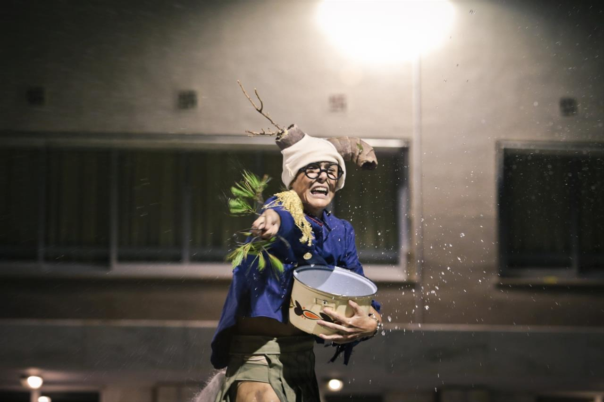
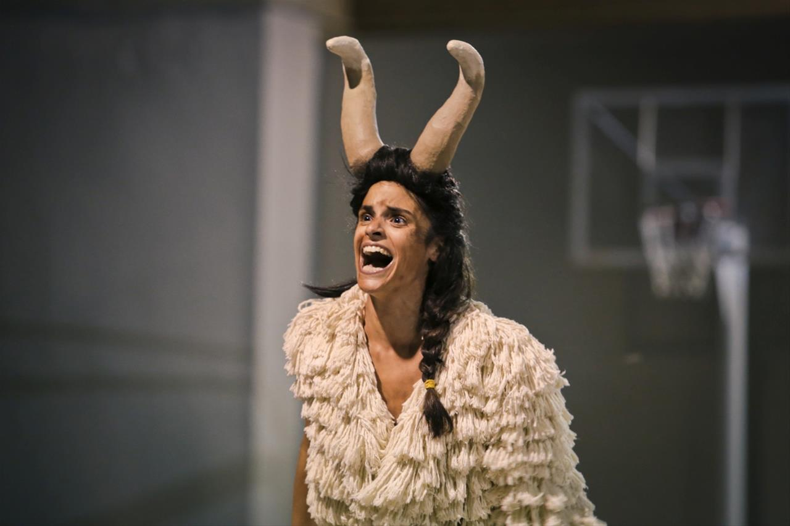
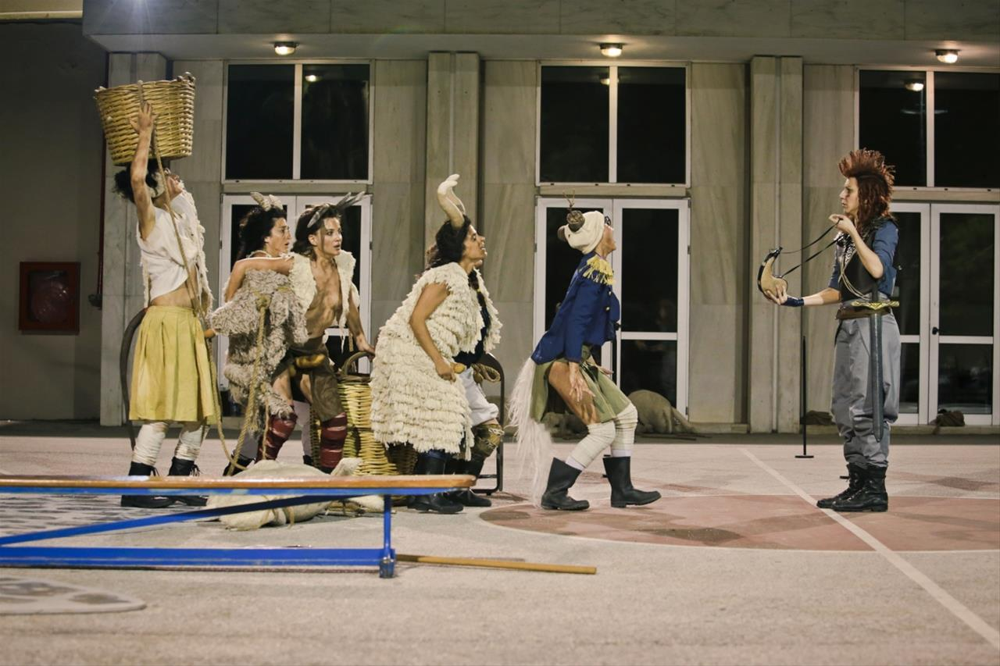
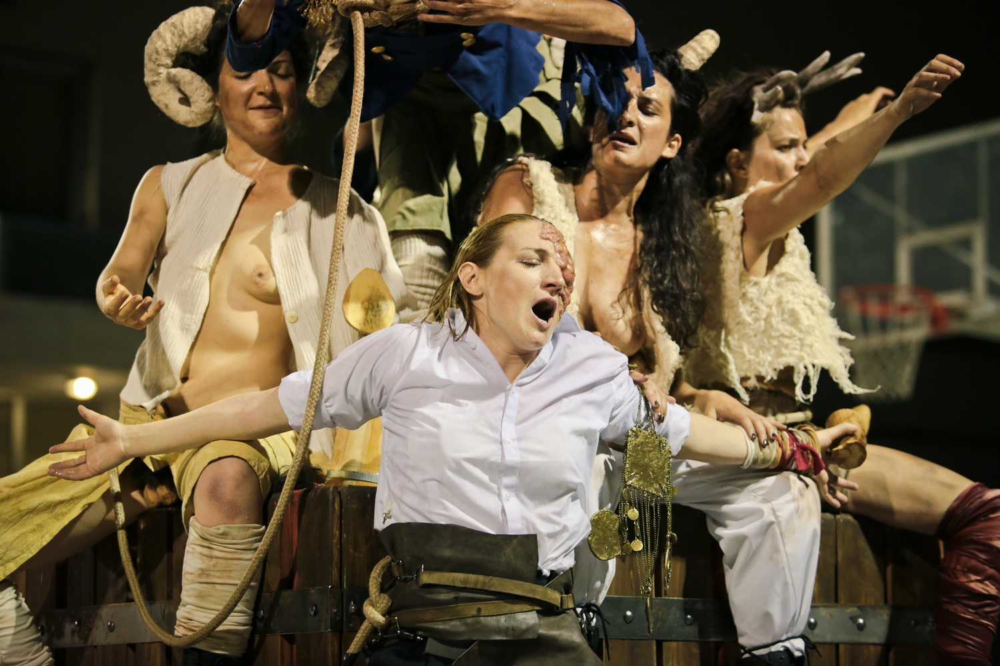
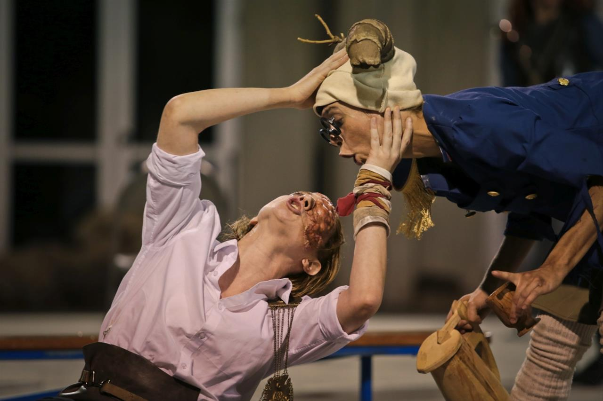
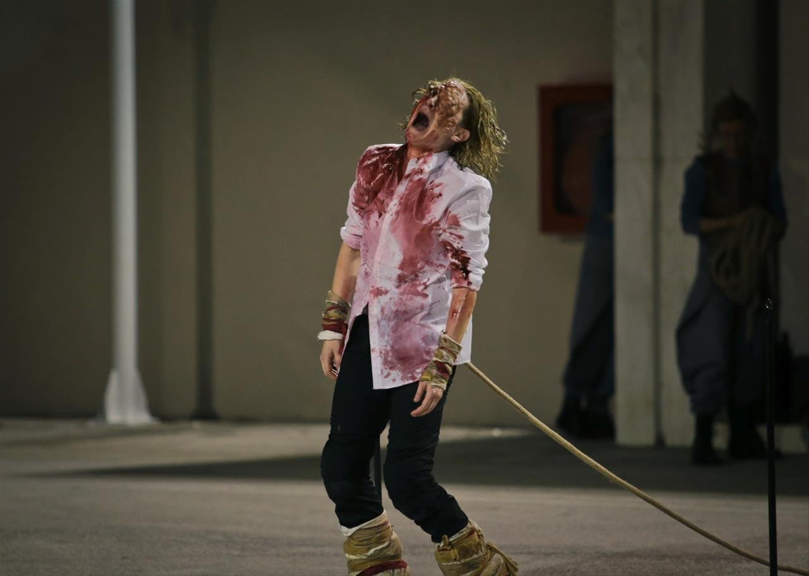
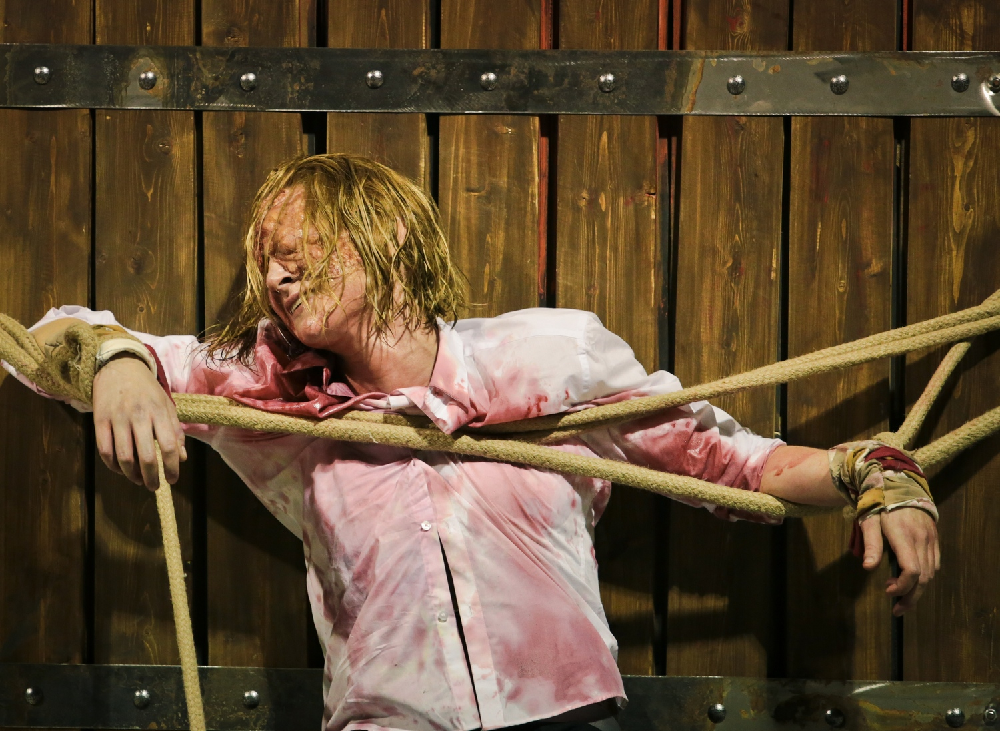

Link
Search
Menu
Expand
Document
Accueil
Description du projet
Productions du corpus
Y. Rigas - 2001
Vidéos
Photos
P. Dentakis - 2017
Photos
Vidéos
Ch. Esnay - 2018
Photos
Vidéos
Interview Ch. Esnay
Entrepôt Github
P. Dentakis - 2017
Photos
      